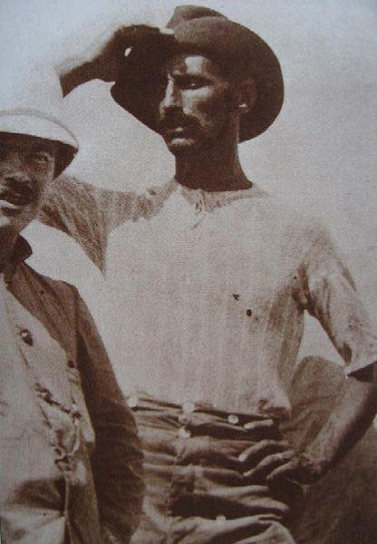
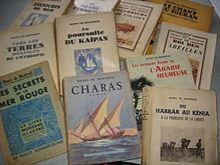

Durant le mois d’avril dernier, ont été publié dans plusieurs numéros du journal national djiboutien « La Nation » des articles concernant une littérature que l’on pourrait appeler coloniale parce qu’écrite des années vingt aux années soixante, par des auteurs occidentaux, en français et diffusant le point de vue « des Blancs ». La société djiboutienne évoluait au fil du temps sans qu’un Djiboutien réponde avec assurance et se fasse entendre, ne maîtrisant peut-être pas encore suffisamment la langue française.
Depuis cette époque et en particulier depuis l’indépendance la société djiboutienne s’est en effet métamorphosée tant économiquement qu’intellectuellement.
Dernièrement l’université a ouvert ses portes et produit des diplômés dans toutes les disciplines universitaires.
Le 15 avril dernier un doctorant en lettres modernes signant M.S. attirait notre attention sur l’ouvrage de Marie Christine Aubry
« Djibouti, l’ignoré » et le regard rétrospectif qu’elle avait bien voulu apporter à cette littérature. À l’époque, elle évoquait le temps, pour elle prochain, où les Djiboutiens prendraient la plume. Ce souhait au fil de la dernière décennie s’est concrétisé et les ouvrages sont publiés chaque année et présentés annuellement à la fête du livre. Mais la polémique ne faisait pas rage.
Et bien cette polémique vient d’être engagée et de façon magistrale par un étudiant djiboutien qui à cette occasion a reçu son grade de Docteur en littérature en décembre dernier à Paris pour s’être investi dans l’œuvre d’un personnage très controversé à Djibouti : Henry de Monfreid.
Le docteur BARKAT GOD Abdourahman a, en 300 pages de soutenance, donné le point de vue de « l’indigène » qui n’avait jamais pu répondre du vivant de Monfreid par écrit et en français. Il vient de démontrer, s’il était opportun de nos jours de le faire, qu’il n’est jamais trop tard pour bien faire, et pour ce personnage de régler quelques comptes, ou d’éclairer quelques aspects de l’homme que certains voudraient oublier.
MAIS QUI EST HENRY DE MONFREID ?
Né en 1879 à La Franqui dans la commune de Leucate dans le sud de la France, Henry de Monfreid est mort à Ingrandes en 1974. Son père, Daniel de Monfreid était peintre et graveur, ami de Gaugin. Henry de Monfreid débarque du paquebot l’Oxus sans un sou en septembre 1911 à Djibouti, microcosme à l’époque de 500 Européens dont 259 Français nous dit-on. Après des trafics en tout genre mais bien dans l’esprit de l’époque, perles, armes, hachisch, il rencontre à Djibouti dans les années trente le père Teilhard de Chardin et Joseph Kessel qu’il cornaque à travers le pays au grand dam du gouverneur de l’époque Chapon-Baissac. C’est Kessel qui, ayant pris connaissance des carnets de bord du navigant et des notes de Monfreid le pousse à se mettre à écrire. Bien avant de publier son premier roman, « Les secrets de la mer rouge », en 1931, Monfreid écrivait déjà de pleines et longues pages, rédigées sur les bancs de l’école, en attendant le train, ou encore dans les cachots des quelques prisons, qu’il a fréquentées durant sa longue existence. Sans ratures, sans fautes, avec le sens et le goût des mots précis et forts, l’aventurier écrit facilement avant de devenir l’écrivain que l’on connaît. Monfreid, à partir des années trente et jusqu’à sa mort, écrivit quatre-vingt ouvrages dont la plupart autobiographiques. Il mêle cependant quelques touches de fiction à une base réelle et il est dans ce cas quasi impossible de déceler la vérité.
POURQUOI VOUS PARLEZ DE MONFREID ?
J’ai souhaité attirer l’attention du lecteur sur la thèse d’Abdourahman car de nos jours encore lire Monfreid peut être douloureux selon l’appartenance culturelle du lecteur. Dans sa conclusion Abdourahman résume, ce que l’on ressent à la lecture de toutes les pages de sa thèse : « cette étude a déclenché en moi une sorte d’indignation puisqu’à travers le racisme de Monfreid par rapport à l’indigène, je me sens personnellement mis en cause » voilà donc un point de vue intéressant car bien sûr étant d’une autre culture quand je lis et relis Monfreid je ne me sens pas agressé bien que ses confidences philosophiques me choquent et que le personnage que l’on aimerait avoir connu ne ferait pas forcément partie de vos amis (c’était l’opinion de Kessel au sujet de Monfreid rapportée par Freddy Tondeur).
Actuellement on assiste à une réédition importante d’une certaine partie des œuvres de Monfreid. Abdourahman pense d’ailleurs, et c’est intéressant, que la maison d’édition par la sélection des œuvres qu’elle réimprime tend à embellir le personnage et à en faire un héros en gommant les zones d’ombre de l’écrivain. Procès d’intention ? Peut-être pas.
Il n’en demeure pas moins et je répondrai ainsi à la question posée par Abdourahaman : « Monfreid est-il encore tant lu en France ? ». Cet été, j’ai posé la même question à un bouquiniste des bords de quais de Seine à Paris et il me fut répondu ceci : « Cher Monsieur, si l’on venait me proposer un container de bouquins de Monfreid trouvés dans les opérations vide grenier, je suis preneur » Enfin si l’on se réfère aux prix exorbitants demandés pour des bouquins non réédités par exemple « le radeau de la méduse » on comprend que l’offre est inférieure à la demande.
Monfreid a laissé de lui l’image stéréotypée d’un aristocrate de talent, bon artiste, excellent marin, fou de mer et d’aventures, à l’écriture simple compréhensible de tous avec cependant quelques figures de styles.
L’ECRITURE DE MONFREID
Monfreid introduit dans son écriture ce que les puristes appellent l’étrangeté. C’est un procédé d’écriture qui dérange la perception habituelle et automatique du lecteur en transcrivant dans ces textes des termes locaux comme kécher, sadaf, askari, nagadi, fixant ainsi l’attention du lecteur et le transportant d’emblée dans un univers exotique en lui apportant une réalité indigène la plus fidèle possible, sans passer d’une langue à l’autre par une traduction qui est toujours approximative et fait souvent perdre au mot ce qu’il portait de substantiel.
Une deuxième singularité dans l’écriture de Monfreid est d’être redondante. Il reprend un événement déjà raconté, sans apporter un élément inconnu du lecteur qui aurait pu donner un éclairage nouveau à cet événement. Mais à la différence d’un copier-coller, il prévient le lecteur ou s’excuse de devoir reprendre ce passage « ceux qui, comme moi, ont pu voir ces pays de lumière dans la solitude des vrais déserts, ceux qui ont pu y demeurer seuls sans compagnons avec lesquels il faille parler, ceux-là sont indulgents si je me répète quelquefois ». A la poursuite du Kaïpan
En considérant cet aspect répétitif et l’emploi de mots et d’expressions locales Monfreid donne priorité, non à la qualité et à la pureté de l’écriture littéraire, mais au contenu lui-même afin de mieux faire percevoir aux lecteurs, par l’emploi d’expressions ou d’un vocabulaire non conventionnel, son espace d’aventure.
Ces procédés littéraires n’entament en rien la beauté de ses textes et Abdourahaman souligne que la qualité de son style et la beauté des descriptions lui ont été permises par les techniques de peintre que Monfreid a acquises pendant sa jeunesse dans l’atelier de son père, ami de Gauguin. Monfreid était aquarelliste et a même vécu de sa peinture dans ces temps difficiles d’après-guerre comme il aime à le rappeler tout au cours de son œuvre. « Du Harar au Kenya » est un bon exemple.
Il souligne également que son amour de la musique, dès son plus jeune âge, a généré chez l’auteur l’usage de la symétrie dans la construction des phrases, symétrie qui crée une certaine harmonie architecturale : le temps est toujours très beau / le vent est passé au nord. Par ailleurs l’utilisation pertinente de la ponctuation, comme un instrument de musique, donne de la tonalité aux textes. (N’oublions pas que Monfreid que ce soit à Obock ou à Aroué au Harar avait toujours un piano et Dieu sait que Aroué est encore à notre époque difficilement accessible. Cela témoignant sans aucun doute possible de sa passion pour la musique).
La virgule donc permet l’équilibre et l’harmonie textuelle rend possible le rythme bref et saccadé et donne de la vivacité au texte, voire même une envolée lyrique : la lune mystérieuse, dont les rayons magiques pénètrent au fond des mers, ira le visiter dans le silence des nuits. Je la cherche en me remémorant les légendes que m’a confiées le vieil arabe. Je la vois, pâle comme un lambeau de nuage, presque invisible, suspendue dans le ciel bleu. (Les secrets de la mer rouge :pp131-132 mort de son vieil ami Saïd)
C’est donc par la beauté de son écriture sur la mer et le désert et par un lyrisme pointu que Monfreid enchante toujours le lecteur. Espaces maritimes et désertiques constituent les lieux préférés de l’aventurier parce qu’il s’y sent libre et soi-même. Plongé dans la grandeur de ces lieux, libre de toute astreinte humaine, il oublie la vie que mènent les autres, « le troupeau ». Pour le lecteur, la mer reste à ce jour toujours mythique et infranchissable comme pour l’ensemble de la société et cela malgré les voyages aériens qui ont annulé les distances et les espaces inconnus C’est grâce à la mer qu’il devient écrivain poussé par Kessel, Ida Treat et Armgart, son épouse, et c’est aussi grâce à la mer qu’il est encore lu.
L’emploi volontaire d’un vocabulaire marin, récurrent, très technique (agrès, déralingué, ralingues) ainsi que la justesse et l’exactitude des informations mentionnées dans ses textes font de lui, aux yeux du lecteur, un spécialiste des choses de la mer et rend vraisemblable la fiction de ses romans d’aventure. N’a-t-il pas seul avec l’aide de quelques recrues construit sur la plage d’Obock deux vaisseaux avec des vieux clous et des planches récupérées sur une épave. Ces connaissances pointues sur le monde marin et maritime expliquent au lecteur, lui semble-t-il, qui ne puisse rien arrivé de préjudiciable au « Héros » : le Monfreid côté FACE.
Une constante encore dans l’écriture de Monfreid est la manière dont il procède pour rompre une certaine monotonie générée par la succession d’histoires, par la description de paysages qui peut déclencher une lassitude chez le lecteur. Monfreid, par un jeu littéraire bien dosé, mêle, récit, description, témoignage et réflexion. Le meilleur exemple de la construction d’un ouvrage qui obéit à cette logique de mélange de narration, de description, de témoignage, de prises de position est « Vers les terre hostiles de l’Éthiopie » Tout l’ouvrage s’articule autour de ce procédé. Il y critique la politique sociale et économique de ce pays et livre finalement son opinion vis-à-vis du problème soulevé. Rappelons que ce style d’écriture journalistique arrive un peu plus tard dans son œuvre. Il fait suite à des articles parus dans la presse parisienne (le Figaro, le Petit Parisien, Paris-Soir dirigé à l’époque par Pierre Lazareff), articles qui lui valurent bien des déboires en Ethiopie et en France.
Toujours avec le même style littéraire et les mêmes artifices, il témoigne et s’engage, j’allais dire sombre, en de courts paragraphes sur des sujets qui nous préoccupent tous : la politique, la justice, la sociologie et surtout la condition humaine.
Lorsque nous lisons Monfreid, il apparaît qu’il accorde de l’importante au jugement que le lecteur va apporter à ses récits, aussi décide-t-il de miser sur la vérité, de s’aider d’une documentation infaillible et de témoignage de première main. Ainsi procède-t-il dans « Les guerriers de l’Ogaden » « Les derniers jours de l’Arabie heureuses » « Le drame éthiopien »
« Ses trois premiers livres sont bons, ceux qui suivent sacrifient un peu trop au reportage » écrivait Daniel Grandclément dans sa biographie de Monfreid. Ce dernier ayant écrit plus de soixante ouvrages. Si l’on souhaite connaître Monfreid, le personnage, le côté PILE du titre, c’est à partir de son quatrième ouvrage qu’il faut le lire. C’est à partir de ces confessions qui semblent sincères bien qu’immondes pour certaines, que l’on connaît le personnage. Sa sincérité est confirmée là encore par la redondance dans différent ouvrages des propos tenus voulant convaincre son lecteur du bien-fondé de son propos. C’est évidemment dans le « coin de ce bois » que s’est embusqué le contradicteur Abdourahman qui « ferraille » avec Monfreid en français, avec sa plume et sans masque.
En tenant compte du contexte politique de l’époque où ces textes furent écrits, l’époque coloniale et impérialiste, Monfreid pour Abourahman est un colon, un impérialiste avide d’argent, ayant compris le caractère rentable de son art et multipliant les publications. Pour lui Monfreid n’est pas un intellectuel comme le prouve l’indigence de ses réflexions sociales et politiques toutes empreintes pour les premières d’un racisme primaire, mâtinées d’impérialisme et de fascisme pour les secondes.
Analysons cette opinion au travers des propos et exemples sélectionnés par le docteur Abdourahman.
Parlant de son fidèle Gabré, Monfreid écrit « j’ai en lui un véritable esclave, car le terme de serviteur ne serait pas exact, et je m’y suis attaché comme à un bon chien » : Aventure de mer :p 181. Espérons que Gabré n’a jamais eu l’ouvrage en main. En somme, si les indigènes méritent un tant soit peu d’attention, c’est en tant que bêtes naturellement vulnérables et ayant besoin d’un soin particulier réservé aux êtres inférieurs. Le respect entre hommes n’est même pas à l’ordre du jour car le partenaire est d’une autre espèce commente Abdourahman qui ajoute : Monfreid divise l’humanité en deux : ceux qui remplissent les conditions universelles pour rentrer dans l’arène humaine et représenté par lui, et ceux apparentés aux animaux ou les subordonnés qui viennent au plus bas de l’échelle humaine.
Les conséquences de cette vision dichotomique de Monfreid sont désastreuses. Il nie le contact entre histoires et cultures ; Monfreid croit profondément que tout projet éducatif visant à faire évoluer l’indigène, contre les lois naturelles qui régissent les sociétés, est une erreur. Si d’aventure un indigène sort du lot, on mettra l’accent sur la fiabilité de la civilisation salvatrice et non sur le potentiel de l’indigène à acquérir un projet d’éducation. Dans « le regard colonial » Diehl résumait cette pensée ainsi : « l’indigène évolué doit avoir l’air évolué avant d’avoir l’air indigène et pour que le lecteur mesure l’ampleur de cette évolution, évidemment due aux bienfaits de la civilisation, il faut une situation de référence : c’est le sauvage. ». Il nous suffit de se référer aux photographies de l’époque ayant fixé le personnel de maison, catégorie sociale supérieure, pour retrouver « ce regard. » A aucun moment dans son œuvre Monfreid ne revient sur cette vision de la société coloniale qu’il admet une fois pour toute comme son unique cadre de référence, plaçant les autres, par rapport à ce cadre, dans sa pensée, comme inférieurs.
Ainsi le racisme biologique et le jugement moral dépréciatif qu’il porte sur les indigènes reviennent en abondance dans l’œuvre de Monfreid. Comment en effet, dit Monfreid, accorder sa considération à un individu pour qui « mon piano était un coffre magique où je tenais captifs des djinns et des démons » (La cargaison enchantée : p.129) A cela, il faut ajouter sa vision politique impérialiste. Il faut s’imposer aux indigènes par la force du savoir, de la technologie et du savoir-faire. C’est la technique qu’il emploie avec son personnel sciemment. Ainsi dans L’aventures de mer, p. 212, lors de la construction du « Ibn al bahar » « chaque jour, les bédouins des monts Mabla apportent sur le dos, une par une, les grosses branches d’arbre et les troncs tordus, choisis selon les gabarits des divers membrures ». Par son savoir-faire, il exploite ces bédouins, leur impose son rythme, sa volonté, son entreprise car il est doté d’un pouvoir technique face auquel l’indigène est véritablement désarmé et il fait intervenir la force physique de l’indigène pour tenter la démesure. Ainsi lors de la mise à l’eau de son bateau, « plus de deux cent Danakils, tous à demi nus, unissent leur effort dans un cri prolongé, et l’énorme masse s’ébranle, comme si la grande clameur poussée par tous les hommes éveillait ce colosse à la vie ». C’est grâce à son savoir-faire qu’il a pu organiser et maitriser les bédouins Ils obéissent et se soumettent. Il aimerait que les autorités coloniales fassent de même. Il fustige la représentation coloniale et l’accuse d’être stérile dans ses actions impérialistes. Il réitère maintes fois sa condamnation sur la passivité de la politique coloniale française : « Qui ne produit rien, ne défend rien, ne fait rien ».
Il ne condamne pas la politique coloniale mais la façon de la conduire et à aucun moment dans son œuvre il ne parle de la défense des droits des peuples soumis dans les contrées qu’il sillonne. Ce que d’autres intellectuels ont fait en son temps (André Gide pour le Congo).
Enfin que dire de ces convictions fascistes qui dominent dans tout son ouvrage, Les guerriers de l’Ogaden, dans lequel il narre et glorifie l’expédition italienne qui envahit l’Ethiopie par l’Ogaden, de sa rencontre avec le général Graziani qu’il encense et prône pour l’Abyssinie un nouvel ordre fasciste. « L’Italien est un bâtisseur, un ouvrier, un créateur, un artiste. Le plus modeste manœuvre fait son métier avec amour et ferveur, car il espère, en récompense, le calme et la paix gagnés sainement, comme le voulut Dieu, à la sueur de son front » ( p. 135)
Il faut lire la description d’une de ces rencontres avec Mussolini pour ne plus douter de son admiration pour l’homme et le système. « J’avance régulièrement dans la salle sonore, et l’homme semble grandir, miraculeusement, et quand j’en suis séparé seulement par la table, il n’y a plus que Lui, et LUI, c’est son regard. Le Duce ferme les yeux. On sent qu’il est parti en ces régions profondes de la pensée, aux archives de sa prodigieuse mémoire et brusquement, il revient, chargé d’idées et de documents … » (Le masque d’or, p :67)
Sur l’acte d’accusation d’Abdourahman figurent encore quatre chefs d’accusation ; malhonnête, peu vertueux, menteur et criminel.
Malhonnête Monfreid, certainement avec les « Indigènes » et avec ses lecteurs. Deux points permettent d’en donner la preuve.
Avec les indigènes, il préconise sans se voiler la face, la manipulation pour mieux les dominer. Se faire aimer en s’habillant comme eux, en parlant comme eux et en pratiquant la même religion qu’eux. Malhonnête avec ses lecteurs car en effet, avec ses figures de style, il manipule le lecteur et l’amène à prendre la fiction pour une réalité. Un auteur de romans a bien sûr le droit de faire appel à de la fiction ainsi que pour les romans d’aventure, mais Monfreid par la multitude de preuves tangibles qu’il apporte, par les propos recueillis par lui-même, par les descriptions méticuleuses du milieu qui l’entoure, par les photos qui illustrent ses romans fait tout pour convaincre le lecteur de la véracité de son récit et par là, se glorifier, se forger cette image de héros qui va enfin assurer sa fortune. Freddy Tondeur, un de ses biographes, confirme la tendance de Monfreid à gommer parfois la vérité et à rectifier le cours des événements en sa faveur.
Abdourahman considère, à juste titre me semble-t-il et n’en déplaise à feu Monfreid, que la pratique qui consiste à altérer des faits, en faisant croire au lecteur que ceux-ci sont vrais, soulève un problème d’éthique, aussi en termes d’écriture. La littérature de Monfreid présente une part de « mensonges » destinée à leurrer le lecteur par rapport à la vie que l’aventurier a menée pendant son expérience avec l’autre et son espace.
Peu vertueux Monfreid, mais faut-il être vertueux pour être écrivain ? Et c’est Abdourahman qui pose la question. On ne peut être un modèle de vertu quand on se vante d’avoir, dans ses premières activités professionnelles chez Maggie, pratiqué des combines délictuelles sur les laitages. Plus tard il se livrera à des ventes d’armes, au commerce du hachisch et enfin se vantera de faire aux dépens des administrations de la santé, des douanes etc., des faux en tout genre et en faire usage bien sûr.
Enfin la dernière accusation, la plus grave, celle qui entache la mémoire de l’homme auprès des Djiboutiens car la tradition orale veut que Monfreid ait du sang sur les mains. On connaît la force chez les nomades de cette tradition orale. Une instruction a été ouverte par le gouverneur de l’époque à l’encontre de l’aventurier pour meurtre. Mais la justice coloniale n’a rien pu prouver faute de preuve. (Voir revue POUNT N° 1).
Dans ses ouvrages, et c’est peut-être de la pure fiction, il reconnaît deux meurtres. L’un sur la ligne de chemin de fer Dire-Daoua et Djibouti en tirant sur un homme somali qui essayait de décrocher son wagon contenant ses ballots de hachisch (La cargaison enchantée) et le deuxième meurtre, plus cruel que le précédent par la manière dont il est exécuté, celui de Joseph Heybou, qu’il décide de supprimer volontairement parce qu’espion au compte du gouverneur de l’époque, et soupçonné par Monfreid d’avoir assassiné, à bord d’un navire une jeune française. Il se sent investi d’une mission divine qui lui dicte d’accomplir la sentence. « Quant aux suites de l’affaire, je devais les accepter ; j’avais foi en mon étoile. Coute que coute, il fallait châtier le coupable, quoi qu’il en pût résulter. J’y étais contraint par une volonté supérieure. Après j’aviserais à me tirer d’affaire. Pour l’instant rien ne me troublait, j’étais soutenu par une confiance inébranlable, j’obéissais en instrument d’une justice immanente » (L’homme sorti de la mer, p115 – 116) Fondamentaliste avant l’heure Monfreid ? On a du mal à croire l’auteur et le suivre dans son acte. Sommes-nous dans la fiction ? Et pourtant une instruction fut belle et bien ouverte. Si fiction il y a, il n’en demeure pas moins qu’il n’éprouve aucune hésitation à supprimer une vie humaine et qu’aucun remord ne transpire dans son œuvre. Il a fait acte de justice. Même si le drame n’est que fiction comment réconcilier une telle mentalité et un comportement de ce genre, passant sous silence le moindre remord et le statut d’écrivain revendiqué par Monfreid ? Les propos contenus dans le dialogue entre la victime et le bourreau sont tétanisants : « bête immonde, tu ne mordras plus... Et je tirai à la tête, presque à bout portant... »
Je peux comprendre que Monfreid ait entretenu lors de sa présence à Djibouti le doute, semant ainsi la terreur chez les indigènes et renforçant son image d’invincibilité pour mieux les manœuvrer et les tenir à distance de « ses affaires » puisque c’est sa théorie... Mais son immoralité dans cette affaire compromet durablement son œuvre et son image. Comment n’y a-t-il pas pensé diront ses détracteurs. D’autres, ses défenseurs et ouvrent ainsi le débat que l’œuvre artistique littéraire ou autre ne peut être compromise par l’idéologie (Céline) ou la moralité (Genet) du personnage. On comprend pas que Grasset ne republie que certains de ses ouvrages rigoureusement sélectionnés.
Comme Abdourhaman, j’ai lu la quasi-totalité de son œuvre et je pense que tout lecteur a le droit, et même le devoir, de se faire son opinion sur l’homme et l’écrivain. Pour mieux cerner l’homme Monfreid et pour connaître peut-être de façon plus nuancée sa position par rapport aux événements du vingtième siècle, tels que la colonisation et l’impérialisme il faudra que Grasset republie l’ensemble de ses ouvrages ainsi que les textes des interviews et conférences données en Europe durant sa vie afin de voir si les idées de l’homme avaient évolué et pour faire la part dans son œuvre de ce qui relève de la fiction.
Je remercie très sincèrement le Docteur BARKAT GOD Abdourahman de m’avoir donné l’opportunité de lire sa thèse et d’en faire un article. Je n’espère ne pas l’avoir trahi si tel était le cas qu’il m’en excuse. Je lui souhaite d’être publié afin que tous ceux qui connaissent et qui veulent lire son travail magnifique le puissent.
P.G.
BIBLIOGRAPHIE SUCCINCTE :
Thèse de Doctorat en littérature présenté par BARKAT GOD Abdourahman ;
Titre : Étude critique et historique de l’œuvre d’Henry de Monfreid : De l’orientalisme à l’impérialisme ;
Date : 2010. Paris
Jury :
Directeur de thèse : Alain Ricard.
Jury :
Marie-Claude Simeone-Senelle
Xavier Garnier
Dominique Chancé
Revue POUNT N° 1 2007 : le dossier judiciaire d’Henry de Monfreid. P. 131-149.


Partager cette page